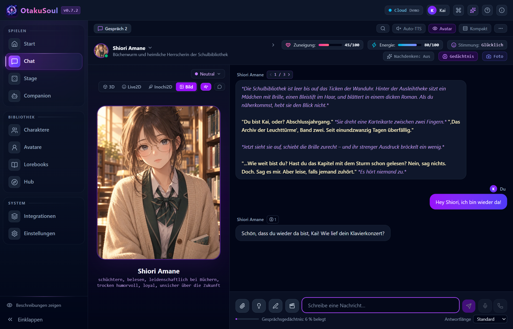
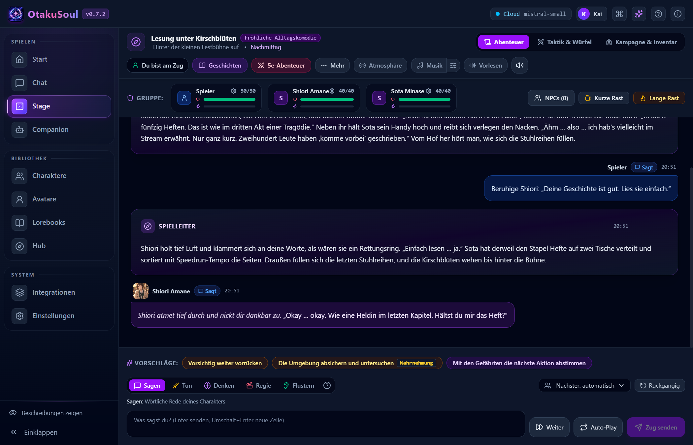
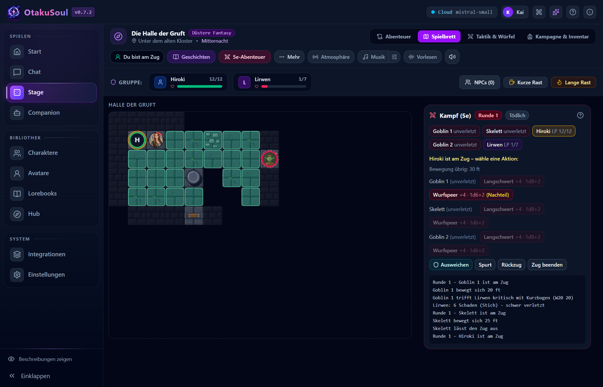

Charakterchat
Chatte mit einer einzelnen Figur oder lade eine Gruppe ein. Sprich eine Figur beim Namen an, wähle aus, wer als Nächstes antwortet, oder lass alle nacheinander reagieren.
KOSTENLOSE OPEN-SOURCE-DESKTOP-APP
Erlebe interaktive Geschichten mit einer KI-Spielleitung oder chatte mit mehreren Figuren, die jeweils ihre eigene Stimme und ihr eigenes Gedächtnis haben.
100 % offline spielen mit lokaler KI. Sobald die lokalen Modelle installiert sind, laufen Chat, Rollenspiel, Spracheingabe, Sprachausgabe und Bildgenerierung auf deinem Gerät. Online-KI-Anbieter sind optional – lokal bleiben alle Gespräche privat bei dir, und du entscheidest, welche Modelle du verwendest.
Windows · Linux · macOS
Die App bringt Deutsch, Englisch, Russisch und Japanisch als Oberflächensprachen mit.
01 / APP ENTDECKEN

Chatte mit einer einzelnen Figur oder lade eine Gruppe ein. Sprich eine Figur beim Namen an, wähle aus, wer als Nächstes antwortet, oder lass alle nacheinander reagieren.

Wähle auf der Bühne eine Geschichte aus oder erstelle deine eigene. Entscheide, was du sagst, tust, denkst oder flüsterst. Die KI-Spielleitung erzählt und deine Begleiter reagieren.

Erkunde einen Dungeon, würfle und bewege deine Gruppe auf einer Kampfkarte. Die Regel-Engine wertet Aktionen aus und die Spielleitung erzählt, was passiert.
Unter Windows und Linux läuft deine Figur als 3D-, Live2D- oder Inochi2D-Avatar oder als sprechendes Porträt über deinen Desktop. Kraule sie am Kopf, lies ihre Sprechblasen oder antworte im Schnell-Chat. Unter Windows und KDE Plasma mit Wayland kann sie auch auf Fensterkanten sitzen.
Sprich mit deinen Figuren und falle ihnen natürlich ins Wort. Gib deinen Geschichten eine Erzählerstimme, entwirf Stimmen mit VoiceDesign oder klone sie mit Einwilligung lokal.
Gib jeder Figur Ausdruck im Chat: mit bis zu 15 Emotionsbildern, einem lippensynchronen Porträt ohne GPU-Last, eigenen 3D-, Live2D- oder Inochi2D-Modellen oder Avataren aus dem VRoid Hub.
Illustriere einen Moment oder bitte deine Figur um ein Selfie. Die Musik passt sich der Geschichte an und lässt sich auf Wunsch lokal per KI erzeugen.
Entdecke eure Geschichte im Beziehungs-Atlas, verzweige in einen „Was wäre, wenn …?“-Chat mit eigenem Gedächtnis oder importiere Karten und Lorebooks aus SillyTavern.
Lies ihr Tagebuch und ihre Abendreflexionen. Wenn du möchtest, kann sie dir auch von sich aus schreiben.
Exportiere Story-Akte als Webtoon, EPUB-Buch oder eigenständige HTML-Seite, die sich im Browser öffnen lässt.
Scanne den QR-Code und chatte auf dem Smartphone oder Tablet im selben WLAN weiter.
02 / DEMO ANSEHEN
Erzähl Shiori von deinem Klavierkonzert. Wenn du später ein neues Gespräch beginnst, kann sie darauf zurückkommen. Jede Figur behält ihre eigenen Erinnerungen, auch in Gruppenchats.
15 Sekunden aus der Desktop-App mit vorbereiteten Antworten. MP4 öffnen
03 / INHALTE IM HUB
Entdecke über 65 Figuren, rund 60 Geschichten und Szenen, 27 Lorebooks und eine Auswahl an Avataren.
Der Entwickler von OtakuSoul und die Community pflegen einen gemeinsamen Katalog. Im Hub der App kannst du einzelne Inhalte nachladen oder ganze Sammlungen mit Figuren, Lorebooks und Szenen installieren. Alle können eigene Inhalte zur Prüfung einreichen.
Finde neue Abenteuer und Ausgangssituationen für die Bühne.
Lade neue Figuren für Chats und Geschichten herunter.
Gib deinen Figuren einen neuen Look mit 3D-VRM-, Live2D- oder Inochi2D-Avataren.
Gib der KI Hintergrundwissen über die Figuren, Orte und Regeln einer Welt.
04 / OTAKUSOUL HERUNTERLADEN
Öffne das neueste GitHub-Release und wähle unter Assets die passende Installationsdatei. Der Einrichtungsassistent hilft dir, ein KI-Modell auszuwählen.
Die Einrichtung läuft direkt in der App. Der Assistent prüft Grafikkarte, Arbeitsspeicher und freien Speicherplatz und empfiehlt ein Modell. Du brauchst weder Python noch ein Terminal oder einen separat eingerichteten Server.
Etwa 6–8 GB Grafikspeicher sind ein Richtwert für ein kompaktes lokales Chatmodell. Ohne eigene Grafikkarte kannst du Mit OpenRouter anmelden wählen. Ohne Guthaben stellt OtakuSoul ein kostenloses Modell ein.
Starte das Installationsprogramm x64-setup.exe unter Windows 10 oder 11.
Nutze die Datei amd64.AppImage oder installiere unter Debian oder Ubuntu das Paket amd64.deb.
Öffne auf Macs mit Apple-Chip die Datei aarch64.dmg und ziehe OtakuSoul in den Ordner „Programme“.
Wenn macOS den ersten Start blockiert, versuche die App zu öffnen. Wähle dann für die Datei aus dem offiziellen Release Systemeinstellungen → Datenschutz & Sicherheit → Dennoch öffnen.